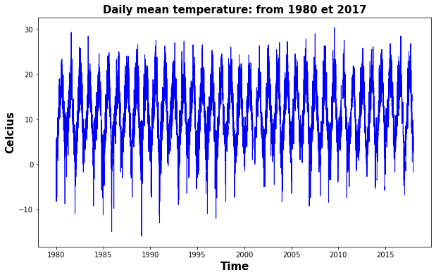
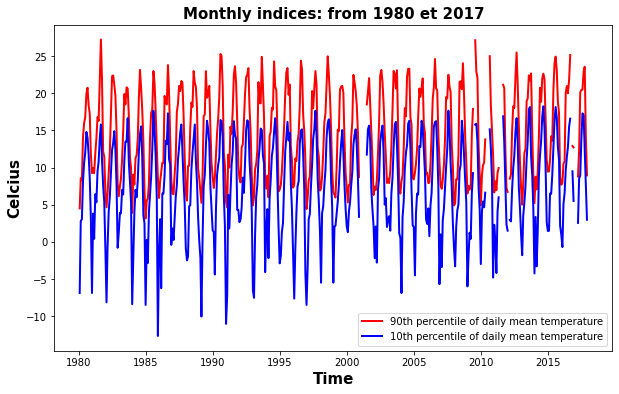
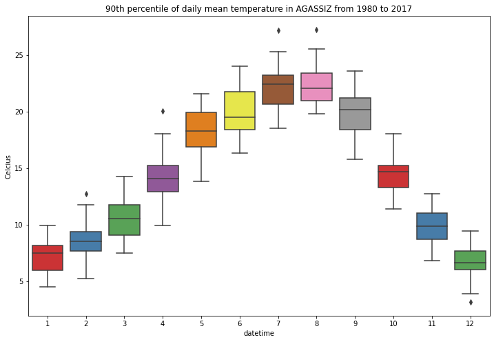
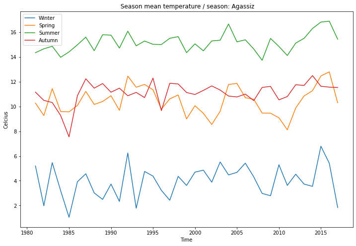
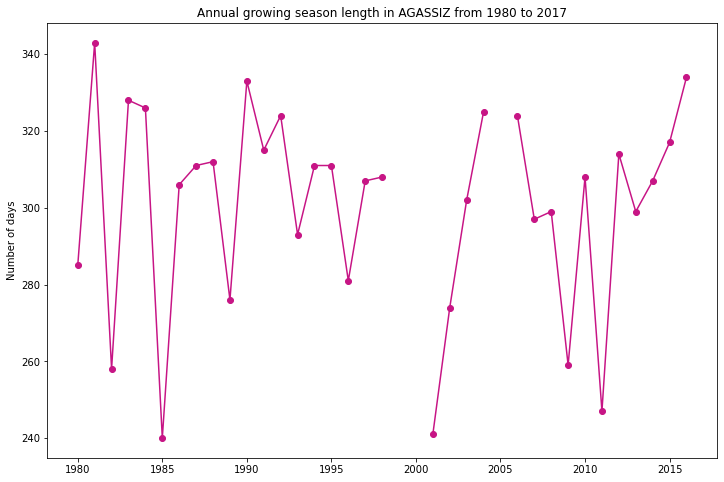

Extreme_Temperature

Compute extreme temperature indices
Evaluation of extreme indices
In order to provide some insight into changes in extreme climate events (e.g., dry or wet spells or cold/warm spells, etc.), a set of descriptive indices of extremes could be developed.
These indices are helpful for monitoring climate change itself and can be used as benchmarks for evaluating climate change scenarios (see the STARDEX project, 2004; Gachon et al., 2005). The indices describe particular characteristics of extremes, including frequency, amplitude/intensity and persistence/duration.
In the present post, some air temperature indices describe cold/warm events (ex. Tmax10pb and Tmin10pb/Tmax90p and Tmin90p,), the frost season length, the frost/thaw cycle, or the growing season length (GSL). The GSL is defined as the number of days between the last and first frost (within an approximately 5°C range), calculated on an annual basis, and describes a period roughly between May and October. Other temperature indices are based on a distribution based, period-fixed, thresholds, such as the 10th and 90th percentiles of daily minimum and maximum temperature.
Datasets used
We will compute these extreme temperature indices using daily temperature data from the second generation homogenized dataset of Environment and Climate Change Canada developed by Vincent et al. 2012.
We will first load and clean precipitation timeseries folowing this post: https://www.guillaumedueymes.com/post/eccc_temp/
1- Let’s import Python librairies
import pandas as pd
import os
from datetime import date
import calendar
import numpy as np
from dateutil.relativedelta import relativedelta
import warnings
warnings.filterwarnings("ignore")
We will first work with one station from this document:
dataframe = pd.read_excel("./Homog_Temperature_Stations.xls", skiprows = range(0, 3))
station = dataframe.iloc[0]
station
Prov BC
Nom de station AGASSIZ
stnid 1100120
année déb. 1893
mois déb. 1
année fin. 2018
mois fin. 9
lat (deg) 49.25
long (deg) -121.77
élév (m) 15
stns jointes n
RCS n
%Miss 1.6
Name: 0, dtype: object
2 - Loading source file
Let’s load time serie ofr AGASSIZ’s station and clean the data. We will load daily temperature from 1981 to 2017:
stnid = '1100120'
path = 'F:/DATA/Donnees_Stations/2nd_generation_V2019/Homog_daily_mean_temp_v2019'
varin = 'dm'
f1 = open(path+'/'+str(varin)+str(stnid)+'.txt', 'r')
f2 = open('./tmp.txt', 'w')
for line in f1:
for word in line:
if word == 'M':
f2.write(word.replace('M', ' '))
elif word == 'a':
f2.write(word.replace('a', ' '))
else:
f2.write(word)
f1.close()
f2.close()
df_station = pd.read_csv('./tmp.txt', delim_whitespace=True, skiprows = range(0, 4))
df_station.columns = ['Year', 'Month', 'D1','D2','D3','D4','D5','D6','D7','D8','D9','D10',
'D11','D12','D13','D14','D15','D16','D17','D18','D19','D20',
'D21','D22','D23','D24','D25','D26','D27','D28','D29','D30','D31']
#os.remove("./tmp.txt")
# nettoyage des valeurs manquantes
try:
df_station = df_station.replace({'E':''}, regex=True)
except:
pass
try:
df_station = df_station.replace({'a':''}, regex=True)
except:
pass
try:
df_station = df_station.replace({'-9999.9':''}, regex=True)
except:
pass
try:
df_station = df_station.replace({-9999.9:''}, regex=True)
except:
pass
for col in df_station.columns[2:]:
df_station[col] = pd.to_numeric(df_station[col], errors='coerce')
We will clean this dataset in order to only have daly values timeserie:
yearmin = 1980
yearmax = 2017
m_start = df_station['Month'].loc[(df_station['Year'] == yearmin)].min()
m_end = df_station['Month'].loc[(df_station['Year'] == yearmax)].max()
d_end = calendar.monthrange(yearmax, m_end)[1]
tmp_tt = [ ]
for year in range(yearmin,yearmax+1): ### Loop over years
for month in range(1,13):
df = []
last_day = calendar.monthrange(year, month)[1]
tmin = df_station.loc[(df_station["Year"] == year) & (df_station["Month"] == month)].iloc[:,2:last_day+2].values
if len(tmin) == 0:
a = np.empty((calendar.monthrange(year,month)[1]))
a[:] = np.nan
df=pd.DataFrame(a)
else:
df=pd.DataFrame(tmin.T)
start = date(year, month, 1)
end = date(year, month, last_day)
delta=(end-start)
nb_days = delta.days + 1
rng = pd.date_range(start, periods=nb_days, freq='D')
df['datetime'] = rng
df.index = df['datetime']
tmp_tt.append(df)
tmp_tt = pd.concat(tmp_tt)
tmoy = pd.DataFrame({'datetime': tmp_tt['datetime'], 'Tmoy': tmp_tt.iloc[:,0]}, columns = ['datetime','Tmoy'])
tmoy.index = tmoy['datetime']
tmoy = tmoy.drop(["datetime"], axis=1)
Quick plot:
import matplotlib.pylab as plt
import datetime
plt.rcParams["figure.figsize"]=[10,6]
plt.plot(tmoy.index, tmoy[:], label='Temerature Station', linewidth=1, c='b')
plt.title('Daily mean temperature: from ' + datetime.date(yearmin, 1, 1).strftime('%Y')+ ' et ' + datetime.date(yearmax, 1, 1).strftime('%Y'), fontsize=15, color='black', weight='semibold')
plt.xlabel('Time', fontsize=15, color='black', weight='semibold')
plt.ylabel('Celcius', fontsize=15, color='black', weight='semibold')
plt.show()

3 - Compute monthly extreme temperature indices
We will compute extreme temperature indices presented in previous table.
def Tmax90p(S):
import numpy as np
ind_tmax90p=[]
S_no_nan = S[~np.isnan(S)]
N = len(S)
N2 = len(S_no_nan)
# Nom: 90eme centile de la temperature maximale quotidienne
try:
if ((N2/N) < 0.8):
ind_tmax90p = np.empty(1)
ind_tmax90p = np.nan
else:
s_sorted = np.sort(S_no_nan)
# La formule de Blom's pour le calculer de la probabilite empirique afin dobtenir m(=rang ou index de la matrice)
m = (N2+0.25)*0.9 +(3/8)
if np.remainder(m,1) != 0:
m_floor=np.floor(m)
m_ceil=np.ceil(m)
slope=(s_sorted[int(m_ceil)-1]-s_sorted[int(m_floor)-1])/(m_ceil-m_floor)
ind_tmax90p=s_sorted[int(m_floor)-1]+slope*(m-m_floor)
else:
ind_tmax90p=s_sorted[int(m)-1];
except:
ind_tmax90p = np.empty(1)
ind_tmax90p = np.nan
return ind_tmax90p
def Tmin10p(S):
import numpy as np
ind_tmin10p=[]
S_no_nan = S[~np.isnan(S)]
N = len(S)
N2 = len(S_no_nan)
# Nom: 90eme centile de la temperature maximale quotidienne
try:
if ((N2/N) < 0.8):
ind_tmin10p = np.empty(1)
ind_tmin10p = np.nan
else:
s_sorted = np.sort(S_no_nan)
# La formule de Blom's pour le calculer de la probabilite empirique afin dobtenir m(=rang ou index de la matrice)
m = (N2+0.25)*0.1 +(3/8)
if np.remainder(m,1)!= 0:
m_floor=np.floor(m)
m_ceil=np.ceil(m)
slope=(s_sorted[int(m_ceil)-1]-s_sorted[int(m_floor)-1])/(m_ceil-m_floor)
ind_tmin10p=s_sorted[int(m_floor)-1]+slope*(m-m_floor)
else:
ind_tmin10p=s_sorted[int(m)-1];
except:
ind_tmin10p = np.empty(1)
ind_tmin10p = np.nan
return ind_tmin10p
def DGJ(S):
import numpy as np
temp_ref = 9
ind_DGJ=[]
S_no_nan = S[~np.isnan(S)]
N = len(S)
N2 = len(S_no_nan)
# Nom: Calcul du DGJ par rapport à une température de référence temp_ref
if ((N2/N) < 0.8):
ind_DGJ = np.empty(1)
ind_DGJ = np.nan
else:
SS = S[S >= temp_ref]
ind_DGJ = np.nansum(SS)
return ind_DGJ
def GSL(s):
N= len(s)
i=1
B_1=0;
B_2=0;
while(i<N-6):
if (s[i]>5 and s[i+1]>5 and s[i+2]>5 and s[i+3]>5 and s[i+4]>5 and s[i+5]>5):
B_1=i+5
break
i+=1
g=212
while(g<N-6):
if(s[g]<5 and s[g+1]<5 and s[g+2]<5 and s[g+3]<5 and s[g+4]<5 and s[g+5]<5 ):
B_2=g+5
break
g+=1
if(B_1>=B_2):
gsl=0
else:
gsl=B_2-B_1
return gsl
def MOY(S):
import numpy as np
ind_moy=[]
S_no_nan = S[~np.isnan(S)]
N = len(S)
N2 = len(S_no_nan)
# Nom: 90eme centile de la temperature maximale quotidienne
try:
if ((N2/N) < 0.8):
ind_moy = np.empty(1)
ind_moy = np.nan
else:
ind_moy = np.nanmean(S_no_nan)
except:
ind_moy = np.empty(1)
ind_moy = np.nan
return ind_moy
We can put all this fonctions in a common module, it will be easier to load an apply functions:
import Indices_Temperatures
list_indices = ['Tmax90p','Tmin10p']
resamp_temp = []
for ind in list_indices:
if ind == 'MOY':
indice = Indices_Temperatures.MOY
indice_out = 'MOY'
elif ind == 'Tmax90p':
indice = Indices_Temperatures.Tmax90p
indice_out = 'Tmax90p'
elif ind == 'Tmin10p':
indice = Indices_Temperatures.Tmin10p
indice_out = 'Tmin10p'
elif ind == 'DGJ':
indice = Indices_Temperatures.DGJ
indice_out = 'DGJ'
elif ind == 'GSL':
indice = Indices_Temperatures.GSL
indice_out = 'GSL'
resamp_temp.append(tmoy.resample('M').agg([indice]))
monthly_indices = pd.concat(resamp_temp, axis=1)
monthly_indices.columns = monthly_indices.columns.droplevel(0)
- We now can make some quick plots:
import matplotlib.pylab as plt
import datetime
plt.rcParams["figure.figsize"]=[10,6]
plt.plot(monthly_indices.index, monthly_indices['Tmax90p'], label='90th percentile of daily mean temperature', linewidth=2, c='r')
plt.plot(monthly_indices.index, monthly_indices['Tmin10p'], label='10th percentile of daily mean temperature', linewidth=2, c='b')
plt.title('Monthly indices: from ' + datetime.date(yearmin, 1, 1).strftime('%Y')+ ' et ' + datetime.date(yearmax, 1, 1).strftime('%Y'), fontsize=15, color='black', weight='semibold')
plt.xlabel('Time', fontsize=15, color='black', weight='semibold')
plt.ylabel('Celcius', fontsize=15, color='black', weight='semibold')
plt.legend()
plt.show()

import seaborn as sns
import matplotlib.pyplot as plt
ax = plt.axes()
sns.boxplot(x=monthly_indices.index.month, y="Tmax90p", data=monthly_indices, palette="Set1")
ax.set_title('90th percentile of daily mean temperature in AGASSIZ from 1980 to 2017')
ax.set_ylabel('Celcius')
figure = ax.get_figure()
figure.set_size_inches(12, 8)
plt.show()

4 - Compute saisonal extreme precipitation indices
In this section, we will compute seasonal mean temperature for each year from 1981 to 2017 using Indices_Temperatures.MOY fonction.
#################################### Calcul des indices saisonniers
djf = []
mam = []
son=[]
jja=[]
incr= date(1981, 1, 1)
end = date(2017, 12, 31)
while incr <= end:
current_year = str(incr.year)
last_year = str(incr.year-1)
try:
dec = tmoy[last_year][np.in1d(tmoy[last_year].index.month, [12])]
except:
rng = pd.date_range(last_year, periods=31, freq='D')
dec = pd.DataFrame({'datetime': rng, 'variable': [np.nan]*31}, columns = ['datetime','variable'])
j_f = tmoy[current_year][np.in1d(tmoy[current_year].index.month, [1,2])]
djf.append(Indices_Temperatures.MOY(dec.append(j_f)))
mam.append(Indices_Temperatures.MOY((tmoy[current_year][np.in1d(tmoy[current_year].index.month, [3,4,5])])))
jja.append(Indices_Temperatures.MOY((tmoy[current_year][np.in1d(tmoy[current_year].index.month, [6,4,8])])))
son.append(Indices_Temperatures.MOY((tmoy[current_year][np.in1d(tmoy[current_year].index.month, [9,10,11])])))
incr = incr + relativedelta(years=1)
TIME=[]
for y in range(1981,2017+1,1):
TIME.append(y)
df_season = pd.DataFrame({'Date': TIME,'Winter': djf, 'Spring':mam, 'Summer':jja, 'Autumn':son},
columns = ['Date','Winter', 'Spring', 'Summer', 'Autumn'])
df_season.set_index("Date", inplace = True)
df_season[["Winter", "Spring", "Summer", "Autumn"]].plot(kind="line")
ax = plt.axes()
ax.set_title(" Season mean temperature / season: Agassiz")
ax.set_ylabel('Celcius')
ax.set_xlabel('Time')
figure = ax.get_figure()
figure.set_size_inches(12, 8)
plt.show()

5 - Compute annual extreme temperature indices
In this last exemple, we will compute the growing season length (GSL) for each year in our Agassiz’s daily mean temperature time serie. The GSL is defined as the number of days between the last and first frost for each year.
We will call Indices_Temperatures.GSL fonction.
annual = []
df_annual = []
incr= date(1980, 1, 1)
end = date(2017, 12, 31)
while incr <= end:
current_year = str(incr.year)
annual.append(Indices_Temperatures.GSL(tmoy[current_year].values))
incr = incr + relativedelta(years=1)
TIME=[]
for y in range(1980,2017+1,1):
TIME.append(y)
df_annual = pd.DataFrame({'Date': TIME,'Growing season length': annual}, columns = ['Date','Growing season length'])
df_annual= df_annual[df_annual != 0]
ax = plt.axes()
plt.plot( 'Date', 'Growing season length', data=df_annual, marker='o', color='mediumvioletred')
ax.set_title('Annual growing season length in AGASSIZ from 1980 to 2017')
ax.set_ylabel('Number of days')
figure = ax.get_figure()
figure.set_size_inches(12, 8)
plt.show()

Guillaume Dueymes
Data Scientist and Research Assistant
My research interests include data science, data management and climate science.